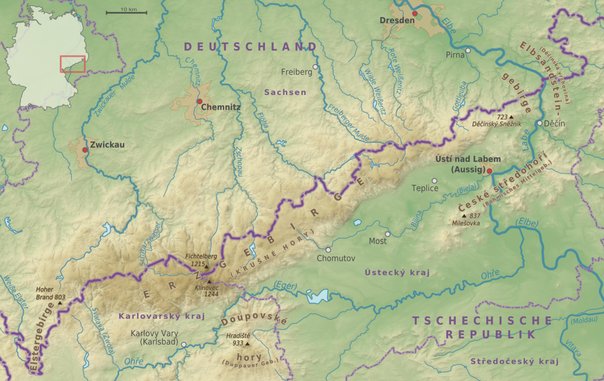
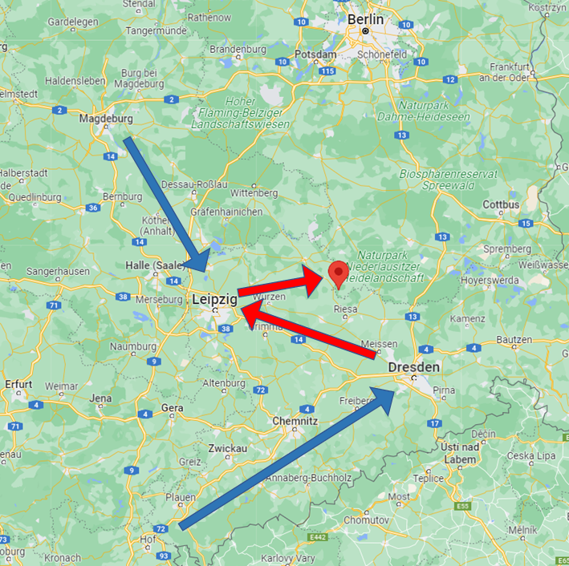
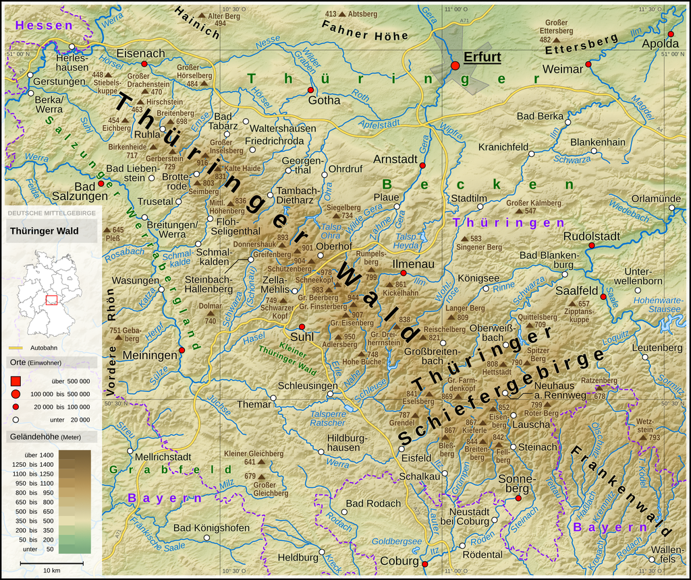
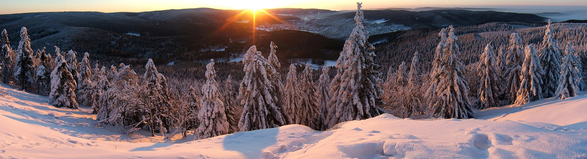
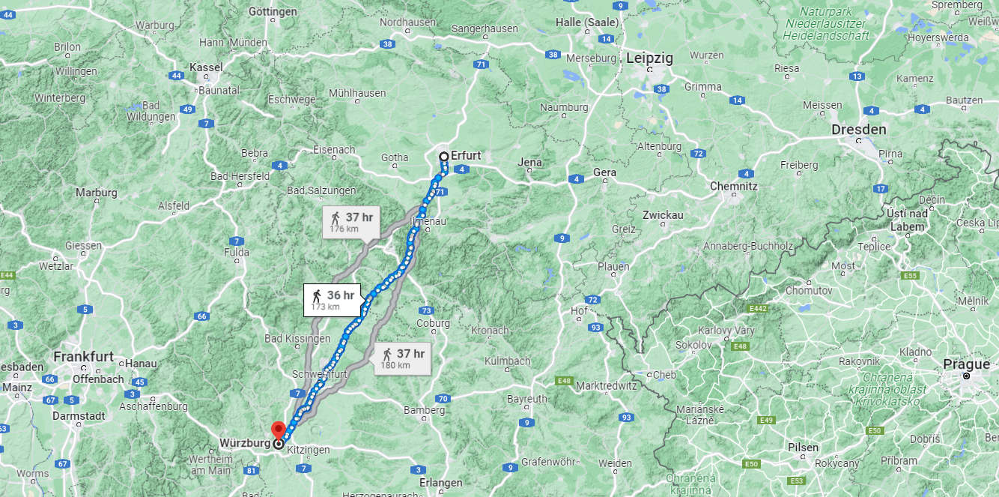
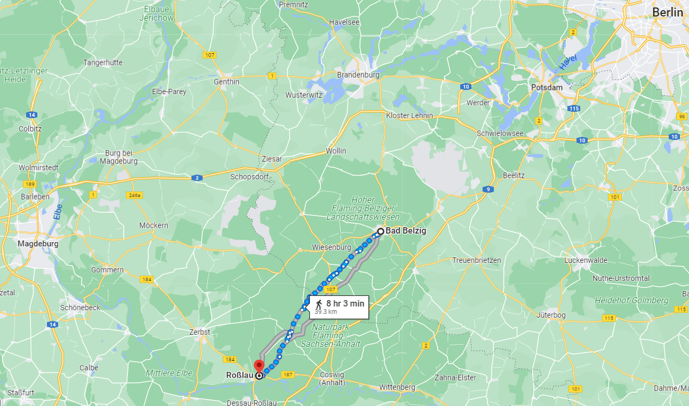
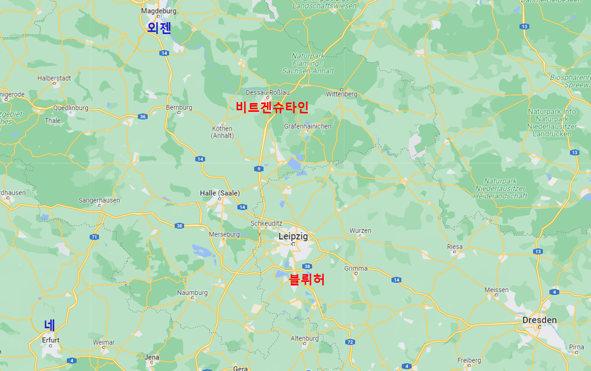

연합군 내부의 상호 불신 - 엘베 강과 튀링겐 숲 사이에서
게시: 2022-07-11T06:30:43+09:00
샤른호스트가 아무 설명없이 다짜고짜 블뤼허에게 '뮐베르크에 다리를 놓으십시요'라고 요구한 것은 아니었습니다. 그는 유사시 드레스덴을 거치지 않고도 즉각 엘베 강 동쪽으로 퇴각할 수 있는 탈출로를 확보해야 한다면서 그렇게 드레스덴 북쪽, 그러니까 엘베 강의 더 하류 쪽에 새로운 다리를 놓아야 한다고 조언했습니다. 아울러, 너무 서쪽으로 진격하면 고립되어 각개격파 당할 위험이 커진다고도 경고했습니다. 샤른호스트의 이런 조바심을 이해하려면 북부 독일을 동서로 가로지르는 4개 도로 중 라이프치히 경로와 드레스덴 경로의 위치를 보셔야 합니다.

(호프에서 드레스덴으로 향하는 최남 도로의 바로 남쪽은 오스트리아 영토인 보헤미아, 즉 체코였는데, 그 국경은 바로 얼츠 산맥이었습니다. 영어로 오어(Ore) 산맥이라고 하는 얼츠 산맥은 최고봉인 카일베르크(Keilberg)가 1.2km를 살짝 넘기는 등 나름 높은 산맥입니다.) 앞서 언급했듯이, 당시 뷔르츠부르크 일대에는 2~3만의 프랑스군이 집결해있고 곧 3~4만의 이탈리아군도 북진해와 합류한다는 소식이 들어와 있었습니다. 샤른호스트와 그나이제나우는 기동성을 중시하는 나폴레옹 전술의 특성상 최단 거리, 즉 호프(Hof)에서 드레스덴으로 직진하는 최남단 도로를 타고 공격해올 가능성에 대해 걱정했습니다. 이 우려는 특히 그럴싸했던 것이, 독일-체코 국경 지대의 얼츠 산맥(Erzgebirge)에 가까운 그 일대의 거친 지형은 기병대가 부족한 프랑스군에게 유리하고 프로이센군에게 불리한 곳이었으므로 나폴레옹이 그 곳을 선호할 가능성이 충분했습니다. 게다가 나폴레옹이 특유의 기동력으로 드레스덴을 공략하면 블뤼허는 엘베 강 동쪽으로 후퇴할 퇴로를 잃고 비트겐슈타인이 있는 북쪽으로 탈출해야 하는데, 혹시 비트겐슈타인이 지원해주지 않을 경우, 마그데부르크의 외젠과 남쪽에서 올라오는 나폴레옹 사이에서 블뤼허의 군단은 포위되어버릴 위험도 충분했습니다. 그래서 샤른호스트가 위에서 언급한 것처럼 드레스덴 하류 쪽인 뮐베르크에 추가로 다리를 놓아서 유사시 탈출로를 만들어야 한다고 했던 것입니다.

(샤른호스트가 당시 생각하던 최악의 상황이었습니다. 외젠과 나폴레옹이 남북에서 블뤼허를 압박할 경우, 샤른호스트는 뮐베르크에 놓은 임시 가교를 통해 엘베 강 동쪽으로 탈출할 생각이었습니다. 뮐베르크의 위치는 구글 위치표가 있는 곳입니다.) 그런 위험이 있다면 전진을 안 하면 그만이었습니다. 그럼에도 불구하고 샤른호스트가 전진하려고 조바심을 냈던 이유는 나폴레옹이 본격적인 반격을 해오기 전에 고립된 외젠을 먼저 때려부수든 프랑크푸르트를 점령하든 아무튼 뭔가를 해야 한다고 생각했기 떄문이었습니다. 그러나 편지로 전해오는 쿠투조프의 의중은 무엇보다 신중함을 제일로 내세우는 것이었습니다. 쿠투조프가 4월 5일 블뤼허의 선봉 역할을 맡고 있던 빈칭게로더에게 보낸 편지를 보면 쿠투조프가 프로이센과의 연합 작전에 대해 어떤 생각을 가지고 있는지 잘 보여줍니다. "...2류급에 불과한 우리 독일 친구들이 우리의 느린 전진에 대해 야유를 보내고 있다는 것을 잘 안다. 그들은 전진이 곧 승리라고 생각하는 모양인데 승리는 적의 영토 안으로 쳐들어간 거리에 달린 것이 아니라 우리 후속 부대와의 거리에 달려있다... 현재 독일 친구들이 우리에게 보여주는 호의는 우리의 작은 선봉부대가 단 한번의 패배를 겪기만 해도 삽시간에 사라질 것이다... 나는 블뤼허 장군에게 아주 솔직하게 터놓고 이야기할 수는 없으니 우리 말을 듣도록 당신이 좀 블뤼허를 설득하되, 자세한 정보를 너무 많이 공유하지는 않도록 하라." 쿠투조프만 프로이센군을 불신하는 것이 아니었습니다. 러시아군에 대한 불신은 샤른호스트도 가지고 있었습니다. 샤른호스트가 보기에 프로이센과 러시아의 연합은 이미 붕괴하고 있었습니다. 이때 샤른호스트가 브레슬라우의 임시행궁에서 국왕 곂에 있던 크네제벡에게 보낸 편지를 보면 '쿠투조프에게 제시한 자신의 작전안 중에서 실행되고 있는 것은 병력을 좌우익으로 갈라 베를린과 드레스덴을 점령한다는 것 외에는 사실상 아무 것도 없다'라고 불평하고 있습니다. 원안에 따르면 쿠투조프의 본대는 좌우양익의 후방을 3일치 행군거리의 간격을 유지한 채 따라와야 했는데 실제로는 16일치의 간격이 벌어지도록 출발조차 하지 않았던 것입니다. 이런 와중에 4월 9일 도착한 볼콘스키 대공의 편지는 다행히 샤른호스트의 우려를 다독거리는 것이었습니다. 이 편지에서 볼콘스키는 쿠투조프가 샤른호스트와 모든 측면에서 동의한다고 말하면서 곧 밀로라도비치가 본대의 선봉을 이끌고 분츨라우(Bunzlau)에서 드레스덴을 거쳐 프라이베르크(Freiberg)로 향할 것이며, 러시아군 본대도 4월 24일까지는 드레스덴에 도착할 것이라고 알려왔습니다. 무엇보다, 연합군이 함부르크 일대에서 작전을 확대하는 것은 무리이며 프랑스군은 라이프치히 경로로 쳐들어올 것이므로 블뤼허는 그쪽 방면으로 진격해야 하되 프랑스군이 더 남쪽인 플라우언에서 나타날 것에 대비해야 한다는 샤른호스트의 의견에 대해 쿠투조프도 완벽하게 동의한다고 했습니다. 그래서 더더욱 쿠투조프의 본대가 도착하기 전에는 블뤼허가 더 서쪽으로 진격하지 않도록 해야 한다는 지시도 딸려 있었습니다. 결국 쿠투조프의 지시를 한줄 요약하면 '샤른호스트 니 말이 다 맞는데 다만 서두르지 말라'는 것이었습니다. 이런 지시의 배경은 러시아군이 나폴레옹은 아직 준비가 충분치 않으므로 당장 반격해오지는 않을 것이며 뷔르츠부르크에서 에르푸르트로 넘어올 때 건너야 하는 튀링겐 삼림지대(Thüringer Wald)에서 에르푸르트 일대의 평원으로 나올 때 프랑스군은 기병대의 부족으로 인해 무척이나 조심스러울 것이라는 생각이었습니다.

(튀링겐 삼림지대는 빽빽한 삼림지대일 뿐만 아니라 꽤 높은 산악지대였습니다. 뷔르츠부르크는 위 지도의 왼쪽 하단, 그러니까 남서쪽에 위치합니다.)

(튀링겐 삼림지대의 전경입니다.)

(네 원수가 병력을 모으고 있던 뷔르츠부르크에서 에르푸르트까지는 약 180km, 약 8~9일 걸리는 거리였으며 중간에 튀링겐 삼림지대가 있으므로 더욱 쉽지 않은 여정이었습니다.) 대략 이렇게 정리가 되어가면서 연합군의 작전 상황은 다소 개선되는 것 같았습니다. 특히 4월 4일, 마그데부르크의 외젠이 3만의 병력을 몰고 갑자기 엘베 강을 건너 동쪽으로 출격하는 사건이 벌어졌는데, 이것이 연합군에게 큰 혼란을 불러일으키기는 했지만 결과적으로는 블뤼허와 비트겐슈타인의 합동 작전에는 매우 좋은 결과를 내고 말았습니다. 외젠이 뭔 생각으로 엘베 강을 건너 전진을 감행했는지는 몰라도, 바로 다음날 비트겐슈타인의 병력이 외젠의 부대와 교전한 결과, 외젠은 맥없이 그냥 마그데부르크로 되돌아가 버리고 말았습니다. 그런데, 돌아가면서 외젠은 엘베 강의 다리를 파괴해버렸습니다. 이건 외젠이 베를린을 노릴 생각이 전혀 없다는 것을 보여준 것이었습니다. 그 결과, 비트겐슈타인은 베를린 방어에 더 이상 연연하지 않고 로쓸라우(Rosslau)에서 엘베 강을 건너 데사우(Dessau)에 자리를 잡았습니다. 다만 쿠투조프는 뒤늦게서야 엘베 강을 건너지 않는 것이 좋겠으며, 굳이 건너야 한다면 블뤼허와 쉽게 연계하기 위해 훨씬 남쪽인 드레스덴 근처 마이쎈(Meissen)에서 도강하는 것이 좋겠다는 편지를 보내왔습니다. 뒤늦게서야 비트겐슈타인이 이미 로쓸라우에서 이미 엘베 강을 건넜다는 것을 안 쿠투조프는 그러면 일단 데사우에서 더 움직이지 말라고 했고, 비트겐슈타인도 그에 따랐습니다.

(벨지히에서 로쓸라우까지는 불과 2일 행군거리입니다. 비트겐슈타인이 자리를 잡은 데사우는 로쓸라우 바로 남쪽인데, 사실상 엘베 강변에 딱 붙은 곳입니다. 외젠이 주둔한 마그데부르크와도 고작 2일 행군거리이니, 외젠을 견제하며 퇴로를 확보하기 위해서도 데사우에 주둔할 필요는 있어 보입니다.)

(결국 4월 초의 상황은 이 지도와 같습니다. 에르푸르트에는 아직 네가 도착하지 않았고 외젠 휘하의 병력에 뷔르츠부르크에서 오는 네의 병력이 꾸준히 증강되고 있는 상황이었습니다. 이 지도만 보면 상황은 프로이센-러시아군에게 확실히 더 유리했습니다. 외젠과 네는 먼 거리에 분산되어 있었고, 비트겐슈타인과 블뤼허는 비교적 가까이 위치해 있었습니다. 만약 프로이센-러시아 연합군을 나폴레옹이 지휘하고 있었다면 나폴레옹은 당연히 비트겐슈타인과 블뤼허의 병력을 집결시켜 에르푸르트를 들어쳤을 것입니다. 하지만 프로이센-러시아 연합군의 사령관은 쿠투조프였습니다.) 4월 9일 쿠투조프의 참모 톨(Toll)이 비트겐슈타인의 참모장 오브라이(Fedor d'Auvray)에게 쓴 편지에는 나폴레옹의 반격은 아마도 6주 후에나 가능할텐데, 이유는 작전에 꼭 필요한 기병 전력의 편성을 위해 그 정도의 시간이 필요할 것이기 때문이라고 명시하고 있습니다. 결국 쿠투조프의 편지든 톨의 편지든, 러시아군 수뇌부가 보내온 편지에서는 전투를 서두르려는 생각은 전혀 없었습니다. 이런 상황 속에서 나폴레옹은 어떤 생각을 하고 있었을까요? 일단 나폴레옹은 3월달 내내 함부르크 상실에 대해 울화통이 터져 있었습니다. 대체 함부르크가 어느 정도로 중요했기에 그러고 있었을까요? Source : The Life of Napoleon Bonaparte, by William Milligan Sloane Napoleon and the Struggle for Germany, by Leggiere, Michael V
https://en.wikipedia.org/wiki/Thuringian_Forest https://en.wikipedia.org/wiki/Ore_Mountains